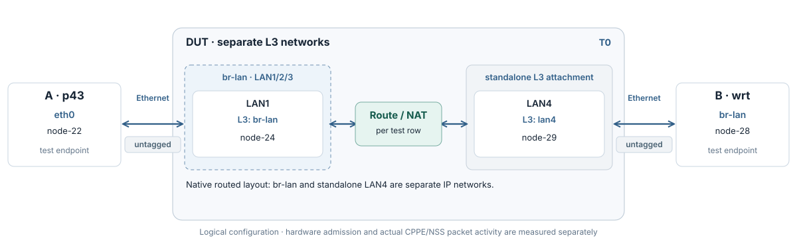
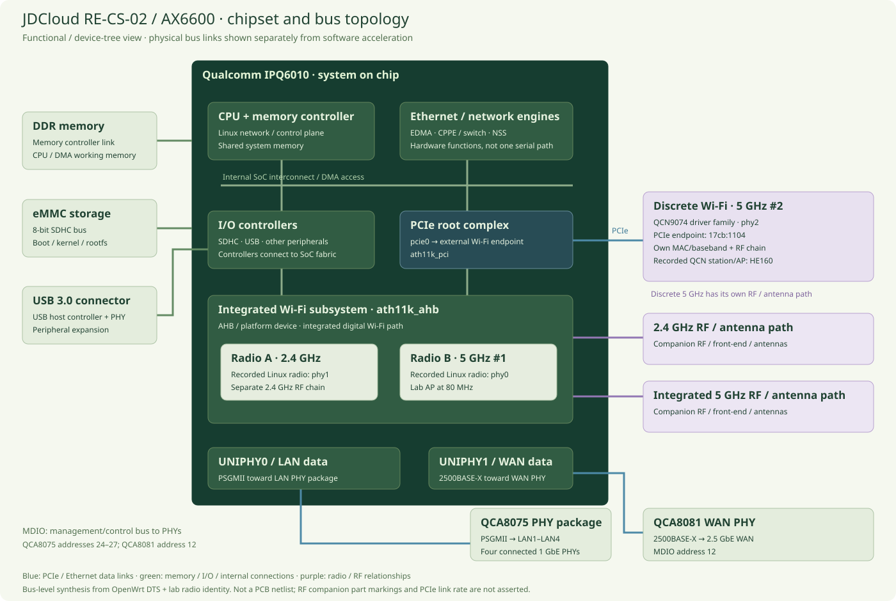
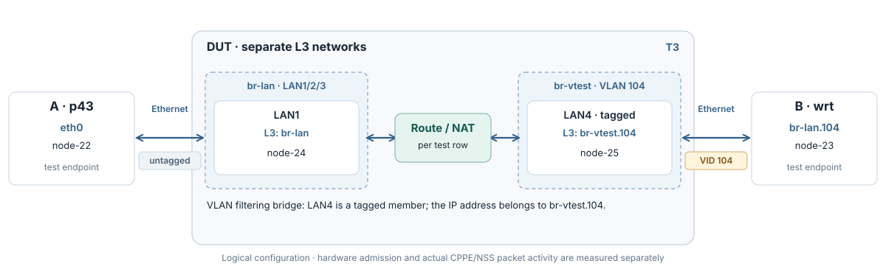
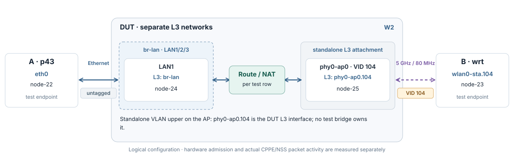
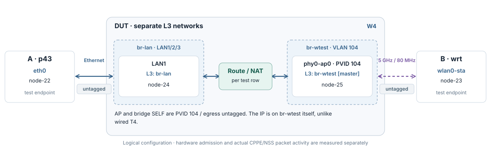
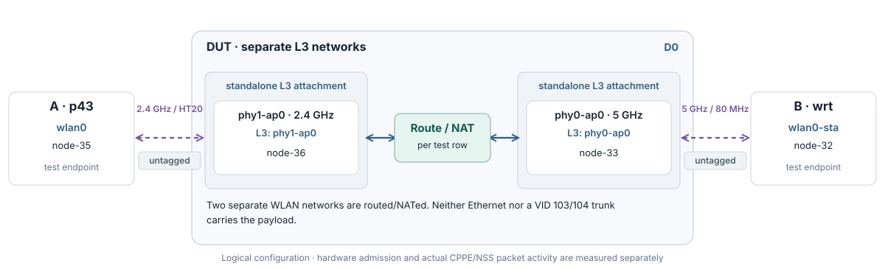
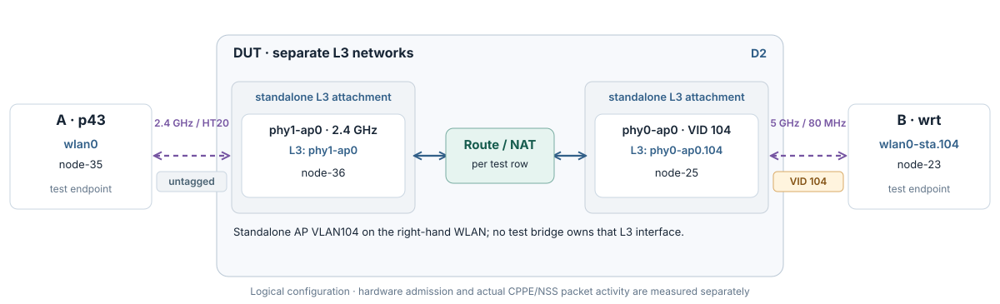
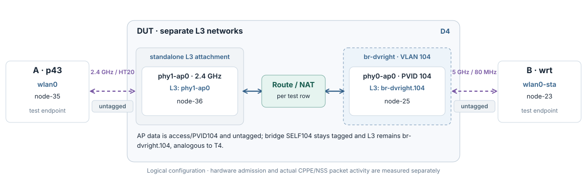
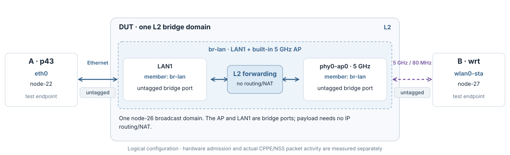

T0
Native Ethernet
LAN1/br-lan to standalone LAN4; untagged on both test links.

Channel 100 mesh-only 300-second test received 477.5 / 483.6 Mbps; independent review and profile verification are pending.
Read mesh results and follow-up →An evidence-led guide to the hardware, acceleration paths and experiments behind a mainstream OpenWrt build for the JDCloud AX6600.
Start with the board. Follow the packet. Trace the decisions.
Related projects and feeds; arrows are conceptual, not proof of exact ancestry for every commit.
Commit-level audit is needed before each change is classified as essential. NSS packages ↗ · OpenWrt IPQ ↗ · LibWrt ↗
Illustrative ownership, not one mandatory packet route. Installed rules and counter deltas establish the actual path.
Bus-level architecture of the board: the integrated 5 GHz radio (phy0, ath11k_ahb) and the discrete PCIe 5 GHz radio (phy2, ath11k_pci) are separate subsystems, each with its own RF path. The integrated subsystem also supplies the 2.4 GHz radio (phy1). The inventory identifies the PCIe radio by its QCN9074 driver family; the OpenWrt hardware record describes related radio part numbers. Confirm chip markings and board revision before treating these names as interchangeable.

See the community AX6600 teardown photographs ↗ and the OpenWrt board-data repository ↗. External photographs remain on their publisher’s site.
The board device tree ↗ records the PCIe endpoint, Ethernet port/PHY mapping and PCS modes. The shared board description ↗ records the 8-bit eMMC controller, USB and QCA8075 PHY package. These upstream links track main; lab radio names are recorded runtime identities. RF companion chip markings, antenna routing and PCIe negotiated rate are not established by the diagram.
Scope: JDCloud RE-CS-02, commonly called AX6600; OpenWrt target qualcommax/ipq60xx. This is a device-specific case study, not a blanket recipe for all IPQ601x boards.
The original inspection identified a Qualcomm IPQ60xx platform, an integrated 5 GHz radio, an integrated 2.4 GHz radio, and a PCIe QCN9074 5 GHz radio. The stock snapshot used the integrated 5 GHz radio at 80 MHz and the QCN9074 at 160 MHz. Board data, calibration, PCIe wiring, Ethernet topology, storage and boot configuration are board-specific; check them rather than copying this device tree to another board. The OpenWrt device record ↗ identifies the SoC as IPQ6010. Record exact silicon identity independently on a new target.
The device has eMMC and a Qualcomm boot chain. The original stock inspection found separate kernel and rootfs partitions and an F2FS overlay in the stock root partition. Later authorized work changed the secondary layout, so original partition sizes are historical. Slot names alone did not prove fallback or safe upgrade behavior.
OpenWrt ↗ supplies the upstream target, Linux integration and build system. ImmortalWrt ↗ describes itself as an OpenWrt fork with additional device support, packages and downstream changes. LibWrt ↗ is another downstream integration; its maintainers describe combining OpenWrt/ImmortalWrt work with Qualcomm NSS support. These are related projects, not interchangeable source trees or a proven single straight-line history for every package.
The inspected stock image identified itself as LibWrt 25.12-SNAPSHOT, Linux 6.12.108, with NSS firmware 12.5. Ethernet interfaces were bound to nss-dp; ath11k and mac80211 referenced the NSS driver. Package and feed identifiers reveal integration lineage, but do not establish all exact source and feed commits in the original image. The exact stock LibWrt commit was not resolved in the initial audit.
The important distinction is who owns each part of the packet path. Linux networking and netfilter set up flows; the hardware and firmware paths then depend on device, topology, flow eligibility and active configuration.
In the mainstream-derived lab images, CPPE handles eligible Ethernet hardware flow offload; the NSS firmware and ath11k integration accelerate eligible Wi-Fi paths. The selected configuration enables Wi-Fi NSS 12.5 and disables the separate Ethernet-only NSS backend. This does not mean an Ethernet leg of a mixed Wi-Fi flow cannot use NSS resources. Software flow offload, CPPE entries and NSS rules are separate observations.
Conceptually: client → radio / ath11k → NSS when eligible → Linux or CPPE forwarding → Ethernet. The reverse direction and bridge, VLAN, NAT and routed paths have different ownership and eligibility. This is a guide to investigation, not a claim that every packet follows one fixed path.
Capture the actual ingress and egress tuple, then compare installed CPPE rows and NSS rules with direction-specific packet counter deltas during that flow. Correlate with receiver results, retransmissions or loss, and comparable per-core CPU. An HW_OFFLOAD flag, a cumulative push counter, or an idle table snapshot alone does not prove that a particular flow traversed hardware.
The 2026-10-31 capacity probes reached 2,048 CPPE base slots in the measured IPv4 routed and SNAT cases. NSS 12.5 plateaued at 1,024 installed IPv4 UDP rules with turnover at higher offered counts. These are independent measured budgets, not universal chip limits. IPv6 CPPE rows consume two slots; distinguish rules from connection counts.
The goal was to retain a mainstream OpenWrt base while bringing back the acceleration required for this board. “Minimum necessary” is a design objective: a patch-by-patch proof of minimality across all configurations is still an audit task, not a measured result.
Stock and native baselines · October 2026. Read-only stock inspection established the LibWrt/NSS stack. A native upstream RAM image provided a control with NSS absent and vanilla ath11k/mac80211. Native operation did not eliminate all stress resets, so the evidence does not attribute every reset to NSS.
First integration · 1 November. Image 2 compiled NSS but failed startup when newer EDMA rejected shared DMA/reset assumptions. Image 3 restored shared-reset and active-ring guards and CPU-only queue mapping; Wi-Fi NSS started. Its MTU regression still failed: 296 of 3,258 qualified boundary points failed. Image 4 improved enforcement but retained in-range loss. Those failures remain part of the record.
Isolation and updated source · 2–5 November. A matched native-mode control helped investigate receive loss. Subsequent work reconciled NSS/EDMA prerequisites and MTU corrections with a newer mainstream base. Image 9 booted and completed bounded station tests, but high-rate loss and recovery limitations remained.
Review and qualification · 5–6 November. Image 10 added fixes involving object lifetime, DMA ownership, teardown and IPv6 MTU behavior. In its selected rerun, 708/708 UDP MTU cases and 114/114 TCP recovery checks passed. All 39 station-load cases completed without an observed DUT reset, while high-rate loss and endpoint/CPU limits remained. This was bounded campaign evidence, not a stability guarantee.
Persistent installation · 7 November. After explicit backup and partition work, Image 10 was installed in the secondary eMMC pair. Image 12, source 21efb75b4c55fa119cbb34cecebdf0baaf5f3a41, Linux 6.18.60, subsequently replaced it via a settings-preserving sysupgrade. Its build includes additional network modules; its provisional artifact label “11” is recorded separately from registry number 12. Installation and readiness were verified; the Image 10 full MTU and load campaign was not repeated on Image 12.
Image13 brought the local EDMA netpoll/NAPI patch into a RAM candidate but lacked the WireGuard executable. Image14 restored that tool, retained the customized handler and active ramoops, and passed16 selected T4/F10 cases. The candidate used a working-tree patch on Image12 source; that source change is now committed in this repository; the precise fault cause and long-term stability remain unproven. Image12 remains installed on eMMC.
Separate device support and NSS/ath11k/EDMA integration prerequisites from MTU correctness, lifetime and teardown fixes, performance tuning, diagnostics, extra packages, and private site configuration. Source commit alone may omit local build deltas. Compare the pinned base, commits, feeds, configuration, overlay and actual image before calling a change essential or upstreamable.
TFTP RAM boot let the team test a complete candidate without writing its firmware to eMMC each time. The bootloader loads a FIT image into memory; the image runs with an initramfs, while stock and later installed images remain separate. This reduces flash churn but does not make a boot risk-free or prove the installed image has the same behavior.
The lab captures the TFTP exchange and reconstructs the image from DATA blocks; checks its SHA-256 against the candidate; accounts for acknowledged blocks, retransmissions, fragmentation and capture drops; and verifies a fresh kernel netconsole marker after boot. A successful Linux TFTP read alone is insufficient because Linux can reassemble fragmented packets that U-Boot cannot. Netconsole is kernel evidence, not serial or bootloader coverage.
Early automatic boots sometimes produced no TFTP request. Delayed ARP did not establish a fix. Later, a specifically authorized saved U-Boot retry sequence was tested with fallback and successful transfers; the original intermittent failure was not reproduced, so long-term reliability remains unproven. Historical procedures and address maps must not be applied blindly to another unit.
The original stock layout, later GPT repair and secondary partition expansion, Image 10 installation and Image 12 sysupgrade are distinct operations. Their reports record the exact authorization, protected partitions, image hashes, boot selection and restore checks. Before any installation on another device, inspect its actual partition table, bootloader, image format, upgrade target and backups; do not infer a safe procedure from matching model names.
Image 12 was installed on the secondary kernel/rootfs pair with an ext4 overlay, while stock payload hashes were checked. Its upgrade used an explicitly verified configuration archive. This is a historical result, not an unattended installation guide.
Earlier native and NSS experiments recorded uncommanded resets under specific loads without a captured fault establishing the cause. High-rate UDP loss, endpoint limits and some radio/IP recovery failures were observed in other campaigns. The Image 10 rerun did not establish long-term stability; Image 12 has not inherited its test qualification. PPPoE, VPN, jumbo MTUs and additional offload configurations have separate coverage limits. A later capture-enabled investigation produced a T4/F10 soft-lockup panic record. Image14 passed the bounded16-case T4/F10 replay; precise root cause and long-term stability remain unproven. See the latest EDMA and crash-capture articles.
For a new IPQ601x port, validate board data, Ethernet and radio wiring, bootloader limits, flash layout, firmware ABI and recovery first. Establish a native control, then add acceleration incrementally; compare packet-level behavior, CPU and installed rules. Preserve failed attempts and record which evidence would disprove a hypothesis.
| Concept | Role | Porting question |
|---|---|---|
| DSA | Models supported switch ports as Linux network devices managed through the switch framework. | Which driver actually owns each physical port? Stock on this DUT used nss-dp; the mere presence of DSA modules proves nothing about those ports. |
| Bridge and VLAN | A bridge forwards within a Layer 2 domain; VLANs separate tagged traffic. | Are tags, bridge membership, MTUs and hardware eligibility correct in both directions? |
| Routing and NAT | Routing selects a Layer 3 next hop; NAT changes addresses or ports when configured. | Does the actual packet tuple and return path match the intended policy? |
| Conntrack | Tracks connection state and NAT mappings through netfilter. | Is a connection tracked, eligible and correctly invalidated? Conntrack count is not a hardware rule count. |
| Flowtable | A netfilter fast path can bypass portions of the normal forwarding path for eligible established flows. | Does the driver admit the flow, and does it remove or update it on MTU, route or device changes? |
| RPS and CPU affinity | Receive Packet Steering distributes software receive processing; IRQ and queue placement also affect CPU load. | Measure per-core utilization, packet loss and receive errors with the same offered load before and after changes. |
References: Linux DSA documentation ↗, netfilter flowtable documentation ↗, Linux network scaling ↗.
Establish a baseline and change one factor at a time. Measure sender offer, receiver delivery, retransmissions or UDP loss, endpoint socket buffers and receive errors, per-core CPU, radio conditions, and hardware counters. CPU affinity and RPS can shift a bottleneck; increasing a system socket ceiling alone does not enlarge an application's socket. Record protocol, direction, duration and topology. A throughput gain cannot by itself prove correct offload or MTU handling.
| Platform | Context | What carries over |
|---|---|---|
| IPQ601x / this RE-CS-02 | Wi-Fi 6-era platform; this device also has PCIe QCN9074. | Our measured results are for this board and the recorded builds. |
| IPQ9574 / Networking Pro 1220 | Qualcomm describes a Wi-Fi 7, 12-stream platform with 320 MHz support and 10GbE-class interfaces. | The methodology carries over; drivers, firmware, board design and acceleration implementation must be revalidated. |
Qualcomm now groups Networking Pro 620/820/1220/1620 under its Dragonwing NPro 7 platform ↗. Its 1220 product brief ↗ identifies IPQ9574. Vendor PHY rates are not application throughput, and this project has not tested those devices.
The lab uses independent wired and wireless endpoints. Their hardware, kernel versions and receiver behavior can limit measured throughput even when the router forwards correctly.
Host addresses, machine identifiers, private network configuration and detailed inventories are omitted from this public edition.
Ramoops reserves memory before Linux starts so kernel and console records may survive a warm reset. Pstore exposes retained records after boot; an archive service preserves them with integrity checks. External netconsole provides complementary evidence but can stop delivering when the network or CPU is stuck.
Warm-reboot console retention was verified. A later T4/F10 SNAT TCP failure produced a persistent CPU soft-lockup and panic record involving netpoll, DSA, EDMA and qdisc processing. This is stronger evidence than an unexplained reset, but it does not identify the contended lock conclusively or explain the earlier resets.
The EDMA changes preserve transmit IRQ state and correct zero-budget NAPI handling. Image 14 passed a bounded 16-case replay. General watchdog retention, power-loss retention, complete capture of every hang and long-term stability remain unqualified.
The public site contains the conclusion and result scope. Raw crash records, register dumps, observer streams and per-case logs are not included. The upstream discussion is OpenWrt issue 26660 ↗.
Reserved RAM retention depends on reset behavior. External p43 netconsole provides independent evidence; neither path guarantees capture of every fault.
12 November 2026. The latest exported report records Image14 running from TFTP RAM, while Image12 remains installed on eMMC. This is report-time state, not a live device poll. The image history distinguishes the original build source from later commits that record the same EDMA source changes.
The candidate was built from source 21efb75b4c55fa119cbb34cecebdf0baaf5f3a41 with a working-tree patch to the built-in qca_edma driver. Source commit alone does not identify these candidate images.
| Area | Change | Why / limit |
|---|---|---|
| TX locking | IRQ-save/restore in edma_ring_xmit and edma_tx_flush, including transmit exit paths | Preserve caller interrupt state under netpoll; the stack supports this mechanism but does not identify the precise lock conclusively |
| Zero-budget NAPI | Bounded TX completion cleanup; return before RX, refill/page-pool or NAPI completion work | Respect the zero-budget netpoll/NAPI contract; distinguish live poll from shutdown drain |
| SKB freeing / queues | Preserve original freeing budget and drain queue-wake intentions | Retain earlier upstream safety work |
| Image13 packaging | EDMA patch and capture-enabled candidate; first boot lacked WireGuard executable | Temporary executable restoration preserved custom handler; this was a candidate defect |
| Image14 packaging | Include WireGuard executable and retain customized handler / declared profile | Same patch; corrected RAM candidate |
Driver compilation, object inspection, exit-path audit and extracted-function harnesses passed. Mocked locking is not kernel concurrency proof. Increased interrupt-off time during TX/DMA setup may affect latency or throughput and still requires measurement.
Image14 passed all 16 T4/F10 cases: route, SNAT, DNAT and combined NAT; TCP/UDP; both initiators. Six-second cases used unpaced TCP or 25 Mbps UDP. All eight UDP receivers reported zero loss; TCP receiver rates ranged 840.14–922.47 Mbps. Each case received fresh mid-load netconsole evidence and cleanup completed. The previously failing SNAT/F10 p43-to-wrt TCP case passed once. No T5 replay, extended endurance or general stability qualification was established.
The first Image14 boot attempt saw ARP but no TFTP request and fell back to installed Image12. The retry reconstructed the exact FIT with 20,714 acknowledged blocks and zero retransmissions/fragments/capture drops. Its 549 modules and 23 firmware files match Image12; EDMA changes are built into the new kernel. Ramoops, station association, normal services and fresh netconsole were verified. Earlier unexplained resets, intermittent no-RRQ and stale startup time remain follow-ups.
The report traced the archived openwrt/qca-edma tip to an identical source-file blob in OpenWrt import bdb0b722b7f0. Identical file content is distinct from Git ancestry. Later upstream work added safe freeing budgets, drain wake suppression, multiqueue RX/TX and software ring indices. The five affected functions remained text-identical between the selected base 39e77cc05db9 and committed Image12 source; the candidate was built with a working-tree delta. Those changes are now committed as 60f1e57c37 (NAPI) and ab443fb6c3 (TX locking), and main incorporates them through merge 6f24f8a02b.
References: archived EDMA repository ↗, OpenWrt import ↗, multiqueue change ↗, networking rework ↗.
Image14 FIT SHA-256: 001dceca26f533d467db5f2c08b267ad60953b9d37846fd0b6d7da911e45afc6. Embedded patch SHA-256: 7e566c1c81f71e8656b2d1f7dcd95d588287e44a97aa5c82cc447f44e70269ca.
The canonical repository is lyrids/openwrt-ax6600 ↗. Main contains the tested development source and both EDMA fixes. Image 14 predates those commits; its embedded build provenance is retained rather than retroactively changed.
Report updated 16 November 2026, 23:37 Singapore. The initial campaign and its 15:52 restoration are historical; the matched follow-up and its 23:37 restoration are complete.
Outcome: mesh connectivity passed; throughput asymmetry remains. Five unexpected router B resets during the initial campaign remain unresolved and potentially confounded by power delivery; a power cause is not established. Router A kept the same boot throughout the campaign. No eMMC kernel update occurred.
Follow-up completed; restoration verified. A user-requested control rebooted router B with Wi-Fi NSS enabled and repeated the direct router-local, 300-second, four-stream bidirectional TCP case on the same integrated 5 GHz channel 149 HE80 SAE mesh topology. The authorized reboot completed into installed Image 23; both routers verified Wi-Fi NSS enabled, core boot enabled and firmware 11.4, with the installed kernel hash unchanged. The channel 149 HE80 SAE fixture and wireless-only negative control passed, as did management and policy guards on all six hosts. The 300-second test started at 23:28:53 Singapore on 16 November and completed at 23:34:03 Singapore with off-device kernel and netconsole capture plus CPU and thermal monitoring. Two pre-traffic setup attempts were unqualified due to ping-output parsing and an overbroad setup-log check; neither was a data-test failure. The earlier five unexpected resets remain unresolved. Power delivery is a user-raised possible confounder, not an established cause; the power source during that earlier run was not confirmed.
| Test | Result | Qualification limit |
|---|---|---|
| Matched direct-router 300-second P4 bidirectional control | A→B receiver 228.2744 Mbps; B→A 627.4854 Mbps; sender retransmissions 1,106 / 603 | Previous router B native control: 756.0116 / 50.15495 Mbps, retransmissions 0 / 5,608. Directional imbalance reversed; one comparison does not isolate power, RF, reboot state or router-local CPU. |
The tuple, cookie, four streams and bidirectional traffic were verified. No reset was observed during the full run; all six management and policy guards passed during load. Independent raw review verified eight socket tuples, cookie, four streams, 300-second bidirectional operation, rates and retransmissions; saved kernel evidence showed no new warning, panic or lockup signature. The earlier run’s physical power source was not confirmed. Prior failures remain recorded.
Follow-up restoration verified. Both original router profiles are restored; temporary mesh interfaces, diagnostic addresses and owned input rules were removed, and no owned traffic or listeners remain. All six management paths and all IP rules and reserved tables passed guards. Both routers report Wi-Fi NSS enabled, core boot enabled and firmware 11.4; router B installed kernel hash is unchanged and router A did not reboot. Six new admission-file hashes per router and the historical complete configuration manifests matched. Fresh netconsole markers were received from both. Two restoration checks initially failed because a file-inspection utility was absent and a historical path assertion was too restrictive; both checks were corrected without changing unrelated DUT state, and the attempts remain recorded. No reset was observed during the 300-second follow-up; this is not a stability qualification. The earlier run’s power arrangement was not confirmed; the relocated run used the vendor supply as confirmed below.
Matrix completed; channel comparison preparing. Both routers will use Wi-Fi NSS. Two clients connect to router B’s separate 5 GHz access point on channel 36 HE160; traffic crosses its test bridge and the SAE 802.11s backhaul on channel 149 HE80 to router A’s LAN and two separate wired receivers. Independent management remains available on all six hosts. The inter-router Ethernet link remains isolated from the test bridge; wireless-only negative controls are required.
``text Client 1 ─┐ ┌─ Wired receiver 1 ├─ Router B AP / bridge ── mesh ── Router A LAN ─┤ Client 2 ─┘ 5 GHz HE160 5 GHz HE80 └─ Wired receiver 2 ``
Both routers verified NSS enabled; the two satellite clients associated with their original power-save settings, and wireless-only controls passed. A capture launcher incorrectly invoked a privilege wrapper unavailable on the router. One initial case completed and the next was interrupted by an explicit controller-stop marker; this setup/controller attempt remains unqualified, not a router fault or reset. All six management, boot and policy guards passed. Capture setup is being corrected before a guarded restart; no case 2 result is claimed yet.
After case 2, a backhaul channel comparison is planned with HE80, access channel and NSS settings fixed. Eligible non-disruptive legal channels will be compared with repeated baseline and candidate checks, ranking the slowest direction first, followed by aggregate throughput, loaded latency and retransmissions. No access-point restart or protected-route change is planned.
The guarded matrix began at 23:55:48 Singapore on 16 November. By 23:59:15, eight of 26 cases had completed. The first client’s TCP receiver summaries were 95.1–119.4 Mbps; UDP 25 Mbps was near its target in both directions with 0–0.00192% iperf-reported loss. At UDP 100 Mbps upstream, the sender offered 86.99 Mbps and the receiver measured 86.22 Mbps: this under-offer is not evidence of mesh loss or capacity. Downstream received 99.991 Mbps with 0.00864% reported loss. Requested 2 MiB UDP buffers were verified as 4 MiB actual at each end. Management, boot, policy and capture-identity guards remained valid, and no reset was observed. The second client and dual-client cases continue; these are preliminary figures.
Checkpoint, 17 November 00:02:45 Singapore: 16 of 26 cases completed. The second client’s single-client TCP receiver summaries were 179.6–215.6 Mbps; UDP 25 Mbps was approximately 25 Mbps in both directions with zero reported loss. The first client’s UDP 200 Mbps upstream offered 87.31 Mbps and received 86.84 Mbps, an under-offer. Its downstream sender offered 200 Mbps and the receiver measured 123.576 Mbps with 37.599% iperf-reported loss. The clients retain different original power-save settings, on and off, so their separate baselines matter. Higher-rate UDP for the second client and six dual-client cases remain. Boot, management and policy guards and all eight capture-process identity checks passed. These results are preliminary.
Checkpoint, 17 November 00:05:25 Singapore: 22 of 26 cases completed. Dual-client four-stream TCP receiver totals were 224.339 Mbps upstream (105.822 and 118.517 Mbps per client) and 194.869 Mbps downstream (84.617 and 110.252 Mbps). Dual-client UDP 100 and 200 Mbps in both directions remains. All checks were valid and no reset was observed. The earlier matrix’s approximately 261.6/215.7 Mbps dual TCP totals are historical; these observations do not establish a cause for the difference. Results remain preliminary.
Case 2 completed, 17 November 00:09:35 Singapore. All 26 cases produced valid flows and no router reset was observed. The final dual-client UDP 200 Mbps downstream first attempt had a client stream/control error and was excluded; a scoped fresh-receiver retry completed. Receivers measured 120.3949 and 124.4881 Mbps with 37.3482% and 39.1695% iperf-reported loss, while each sender offered approximately 200 Mbps; aggregate received was 244.883 Mbps. Upstream aggregate received was 232.290 Mbps, but the senders offered only 114.784 and 118.587 Mbps against 200 Mbps requested each, so this is not a 400 Mbps capacity result. Dual UDP 100 aggregate was 199.905 Mbps upstream with 0.01824%/0% loss and 200.019 Mbps downstream with 0%/0% loss. Dual TCP aggregate was 224.339 Mbps upstream and 194.869 Mbps downstream.
All eight passive management and inter-router wired captures saw zero matching test-port packets and zero capture drops; boot identities and all six policy guards passed. The mesh fixture remains temporarily active. The channel comparison is now held; no channel changed. Independent raw review confirmed the valid-flow count.
Next test held for physical placement. The user is relocating both routers and will signal when they are ready. The channel sweep is on hold and no channel changes have been made. All case 2 payload and captures stopped; the temporary mesh fixture and backups remain. The next plan returns to the direct router-local case. The user authorized temporarily silencing access-point or station interfaces that share the mesh radio on both routers, but preparation only has occurred and none has yet been disabled.
Independent review confirmed 26 valid-flow cases. During the final UDP downstream retry, host-wide receive-buffer error counters increased by 12,946 and 4,465 on the two clients; these interval-wide counters do not establish the full cause of the retained loss.
Relocated direct case preparing, 17 November. The user confirmed both routers are side by side with an unobstructed path and the inter-router Ethernet cable physically removed. Admission is preparing for the router-local 300-second, four-stream bidirectional TCP case on channel 149 HE80 SAE with NSS enabled on both routers. The user authorized silencing access-point or station interfaces sharing the mesh radio, but this has not yet been done; management and protected routing must first be verified. No reboot or kernel write is planned. Placement and potentially access-point concurrency both differ from earlier runs, so this comparison cannot isolate RF placement alone. No result is available yet.
Relocated direct test completed; AP restoration verified. Admission passed after recreating router B’s volatile mesh. Both routers verified NSS and core boot enabled with firmware 11.4; the disconnected inter-router cable was confirmed by carrier-down on both ends. Router A’s boot was unchanged and router B had a new boot after the physical move; no cause or unexpected crash is inferred from that change. Fresh netconsole markers and mesh pings passed, the installed kernel hash was unchanged, and all six policy guards passed.
Radio isolation is partial: one unprotected mesh-radio access point on each router was stopped while its network device remained. A protected router A access point remains beaconing because stopping it would remove a route in a reserved table. The separate-band upstream station and access point remain active. The user confirmed side-by-side unobstructed placement and cable removal. The 300-second router-local four-stream bidirectional test ran from 00:58:27 to 01:03:36 Singapore on 17 November. Both NSS settings remained enabled; boot and policy guards passed and no reset was observed. Both temporarily silenced access points were restored at 01:04:18 Singapore; the mesh fixture remains. No channel change is planned. Placement and concurrency changed together, so any difference cannot be attributed to RF alone. No reboot command or kernel write was performed.
Relocated result, independently reviewed. Router A→B received 118.738842 Mbps and B→A received 454.009884 Mbps; senders reported 762 and 246 retransmissions respectively. The earlier NSS-on control received 228.274364 and 627.485374 Mbps, with 1,106 and 603 retransmissions. Both relocated receiver rates were lower and directional asymmetry persisted. Placement, access-point concurrency, router B boot and power arrangement differed, so no cause can be attributed from this comparison. The user confirmed router B uses its vendor power supply for the relocated run.
Final checks confirmed both restored access-point carriers, all six management paths and protected policy guards, unchanged admission configuration files, NSS/core/firmware settings and installed kernel hash. No owned traffic or listeners remain and no reboot command was issued. Independent raw review verified the 300-second four-stream bidirectional run, eight socket tuples, cookie, rates and retransmissions; no new warning, panic, lockup or NSS crash signature appeared during the test. Fresh netconsole markers bracketed the load; the router B in-load segment contained no additional messages. Ramoops retention limits remain.
The planned finite matrix repeats the original 26 twenty-second cases: each client separately uses TCP one and four streams and UDP 25, 100 and 200 Mbps in both directions; dual-client cases use four-stream TCP and UDP 100 and 200 Mbps in both directions. Actual offer, receiver loss, retransmissions, socket drops, CPU, thermal data and management guards will be recorded. There is no planned soak, reboot or kernel write, and no result yet.
HE160 setup and DFS admission in progress. The user authorized HE160 or 80+80 MHz, including DFS, and waived router-service preservation for this test. Both integrated 5 GHz radios are being configured temporarily for the channel 100–128 block, center 5570 MHz, width 160 MHz. Co-channel access points, including the previously retained router A access point, will be stopped. Management over WAN remains required; no reboot or eMMC kernel write is planned.
The test must wait for DFS channel-availability checks, then verify secured SAE mesh association, actual 160 MHz width and peer pings before throughput. Both radios advertise 160 and 80+80 MHz capabilities including DFS widths. The high non-DFS 160 MHz block is unavailable because its upper channels are disabled. If HE160 fails, 80+80 MHz will be investigated; neither mode is yet qualified. Rollback configuration copies are saved. All IP rules and other reserved routes remain protected; the user’s waiver permits only the operational link-down or absence of the route attached to the stopped router A access point, without manual writes to the protected routing table. Router B’s vendor power supply is user-confirmed. No throughput result exists yet.
Wide-channel attempts rejected; HE80 fallback preparing. The HE160 channel-availability attempt was rejected because the kernel reported the generic extension disabled. In the 80+80 MHz attempt, runtime hostapd field settings succeeded but enabling failed on both routers. Neither attempt established a wide mesh peer or passed traffic. Advertised capability and runtime behavior need investigation; these failures do not establish that the hardware is incapable. Raw setup failures are retained.
At the user’s direction, the fallback is channel 100 HE80 with center 5530 MHz. DFS admission, secured SAE peering and a 300-second four-stream bidirectional test remain pending. Co-channel access points will be stopped after mesh startup under the user’s service-preservation waiver; WAN management and IP rules remain protected. No reboot or kernel write is planned.
Mesh-only channel 100 profile preparing. The user selected persistent disabling of three specified co-channel access points, with no automatic restoration after the test, so channel 100 is reserved exclusively for mesh. The configuration uses a network-managed SAE mesh interface on each integrated 5 GHz radio at HE80, attached to the appropriate existing test networks. Actual access-point silence, DFS admission and peering remain to be verified; no traffic result is claimed.
An earlier standalone DFS mesh setup passed access-point channel-availability checks but its supplicant remained disconnected and the mesh never became active. That unqualified setup attempt is retained; it was not a traffic failure or crash. WAN management and IP-rule guards passed. No reboot or kernel write was performed.
Mesh-only link verified, 17 November 01:35:14 Singapore. The three user-selected access points are persistently disabled. Each integrated mesh radio inventory contains only a mesh-point interface, with no access point or station on channel 100. Both report channel 100, 80 MHz width and center 5530 MHz; secured SAE mesh packets passed in both directions. NSS, core boot and firmware 11.4 were verified on both routers, and management guards passed. The standard network-managed mesh interface is active. The separate-band profile remains unchanged.
The first 300-second, four-stream bidirectional data test ran from 01:35:56 to 01:41:06 Singapore on 17 November. Both boots and NSS settings remain unchanged, management and IP-policy guards pass and no reset has been observed. The three selected access points remain persistently disabled and the channel 100 HE80 mesh profile will be retained after the test. The separate-band profile remains unchanged, with no access point or station on the channel 100 mesh radio. The user authorized the attached router A route’s operational offline state; no reboot or eMMC kernel write occurred.
Channel 100 mesh-only finite result. Router A→B received 477.514537 Mbps and B→A received 483.578314 Mbps, for 961.092851 Mbps aggregate; corresponding senders reported 79 and 185 retransmissions. Both routers used NSS/core boot enabled and firmware 11.4; router B used its user-confirmed vendor supply. The relocated routers were side by side and the inter-router cable was removed. No reset was observed and guards passed through the run. Raw tuples were checked; independent review and final profile verification remain pending.
The directions were closely balanced and both exceeded the prior relocated channel 149 partial-isolation result of 118.738842/454.009884 Mbps. Channel, access-point concurrency and configuration manager changed together, so this comparison does not isolate a cause. This finite result is not a universal capacity or stability qualification. The three selected access points remain persistently disabled and the channel 100 mesh-only profile is to be retained; the separate-band profile remains unchanged.
The initial campaign ended with original profiles restored and all six management paths verified; the matched follow-up and its restoration are complete; case 2 is preparing. Temporary mesh interfaces, diagnostic addresses and routes were removed, owned traffic was stopped, and clients returned to their original Wi-Fi profiles and power-save settings. All protected policy guards passed. Both persistent netconsole receivers remain active; temporary TFTP service is stopped.
Final checks matched all 19 router A and 18 router B original configuration-file hashes, plus all 549 router B modules and 23 firmware files. Router B is back on its original installed Image 23, NSS 11.4 and original access-point profile. The verified restore source remains preserved. The matched follow-up completed and final restoration was verified at 23:37:24 Singapore.
The backhaul used secured SAE 802.11s on integrated 5 GHz channel 149 at HE80. The satellite access point used the separate 5 GHz radio on channel 36 at HE160. Two wireless clients reached independent wired receivers through the mesh. The inter-router Ethernet cable stayed isolated from the test bridge. Mesh-down controls blocked fresh traffic while the cable remained connected, then restored delivery when the mesh returned.
| Test unit | Recorded result | Qualification limit |
|---|---|---|
| Secure mesh and wireless-only negative controls | Peers established; fresh traffic failed with mesh disabled and recovered after re-enable | Establishes the tested path and connectivity |
| Bridged endpoint matrix | All 26 cases produced records without functional errors; dual TCP receiver totals about 261.6 Mbps upstream and 215.7 Mbps downstream | High-rate UDP loss, sender under-offer and TCP retransmissions remained |
| MTU and DNS | Eight checks passed across both clients: delivered DF payloads at 1300 and 1472 bytes, local rejection at 1473, and Wi-Fi-bound DNS A answers | These are finite functional checks |
| AP-local controls | Four 300-second bidirectional units completed without reset | One paced under-offer; substantial unpaced asymmetry; kernel termination differs from forwarded traffic |
| Direct mesh controls | Two 300-second units completed; unpaced receiver directions about 756.0 and 50.2 Mbps; paced directions about 100 Mbps each | Directional asymmetry and retransmissions prevent a general capacity claim |
| Intra-BSS client control | A 300-second test completed; qualified mesh-interface capture saw 52 positive-control packets and zero matching packets from the actual client-to-client test | Applies to this observed interval; WLAN firmware forwarding remains possible |
| Sustained forwarding | Five unexpected router B resets across installed and diagnostic RAM runs | The planned long soaks were interrupted; stability is unqualified |
Four resets occurred with router B Wi-Fi NSS enabled, including the capture-only RAM run; one occurred with router B using native ath11k and its NSS core stopped. Router A remained NSS-enabled during the native-router-B control, so this was not an all-native pair. Neither a router-B-NSS-exclusive cause nor a native-mode workaround is established.
Available kernel streams, netconsole, crash archives and receiver/controller records were preserved privately and hash-verified off-device. The final reset produced no new bark, stack or panic trace in either off-device kernel stream or netconsole; the new installed boot archived zero pstore records. Historical records were kept separate. Sampled temperatures and cooling observations do not exclude a transient, watchdog, firmware or power problem.
A capture-only RAM image was built from pinned source, preserving the exact Image 23 initramfs and device tree. Its intended executable change widened watchdog pretimeout from five to 15 seconds; bark IRQ affinity to CPU 1 was verified. It was RAM-booted after full transfer reconstruction, exact hash, acknowledgement, fragment and capture-drop checks. Its first 300-second forwarding unit passed; the second ended in the fifth reset. Local RAM logs were volatile; off-device streams persisted. The installed kernel was unchanged, and crash retention remains unqualified.
The root cause and a stability fix are unresolved. Controlled power-source and serial-capture experiments are follow-up work; no power cause has been established. The planned wrong-key security and broader lifecycle checks were not completed. Failed setup attempts, controller interruptions and invalid traffic results remain in the activity record and are excluded from qualified throughput or stability claims.
**Campaign-start snapshot — historical, superseded by the final results above. Preparation was complete and testing was starting on 16 November 2026, Singapore.** Both router preparation chats have completed and are idle. Router A runs installed Image 17 with NSS 11.4 release 6; router B runs installed Image 23. Both use Linux 6.18.60. These observations are campaign-start status, not a stability qualification.
The first planned test is an isolated integrated 5 GHz SAE 802.11s peer link on channel 149, HE80. A wireless-only negative control, bidirectional endpoint traffic, MTU checks, lifecycle tests and a soak are planned as feasible. Independent management access is available for all hosts. Router A's upstream QCN station and selected routing policy are to be preserved. No eMMC kernel updates are authorized for this campaign.
No mesh results had been recorded at this initial admission stage. Earlier NSS 11.4 local mesh startup allocated nodes without a peer; that observation does not establish peer forwarding or acceleration. Results, failures, blockers and crashes will be added as evidence becomes available, with sensitive identifiers and raw evidence excluded.
Management SSH was verified on both routers; ramoops and netconsole receivers are active. An admission script encountered an empty reserved routing table while inspecting it: the read-only route query returned an error. No hardware configuration was changed. The check is being corrected to recognize an empty table, after which admission will be retried. No traffic result is claimed from this setup attempt.
Admission subsequently passed: both management SSH paths, current boot identities, NSS 11.4, active ramoops and independent netconsole receivers were checked. Private configuration backups were saved, and all IP rules and reserved routing tables matched their guards.
The first isolated mesh interface startup failed because manual interface creation selected the same MAC as an existing access point. Unique locally administered MACs corrected interface startup. NSS debug now shows mesh link, encapsulation and decapsulation nodes on both routers; this does not establish secure peering or forwarding.
Secure peering remains pending. A standalone daemon startup option was incompatible with the installed build; the logging invocation is being corrected and actual daemon readiness checked. Router B's integrated 5 GHz access point moved from channel 100 to 149, retaining HE80. Router A's access points and upstream QCN station remain unchanged. No router reset or panic has been observed, and routing guards pass. These setup failures are separate from datapath results.
The corrected supplicant on router A repeatedly reports scan failures with EBUSY while two access points are active on that radio. Router B joined the securely configured mesh group on channel 149 at 80 MHz, but no peer is established yet. A fixed-channel scan workaround is being tested while preserving router A's access-point networking and protected routing policy. Both boot identities remain unchanged; no crash has been observed. Fresh netconsole markers were independently received from both routers, and four test endpoints are reachable with the required traffic and capture tools. Router A and router B here refer to separate physical routers.
Secure peering passed. Setting scan_freq=5745 in router A's owned supplicant resolved the repeated EBUSY scans without disrupting its access points. Both mesh interfaces report channel 149 at 5745 MHz, 80 MHz width and 5775 MHz center; each reports the other as an established, authorized, authenticated and associated peer with management frame protection. The RSSI snapshot was −26/−28 dBm. Boot identities and all IP rules and reserved tables 90, 100, 190 and 200 remain unchanged. Wireless-only negative control and data tests are next; throughput and NSS acceleration are not yet established.
First mesh data passed. Five ICMP packets in each direction were delivered with zero loss. Steady round-trip time was about 3.6–3.7 ms, with a 12 ms first startup packet. One-hop mesh paths matched the peer neighbors, and NSS mesh decapsulation and forwarding counters increased during this isolated smoke test. This establishes delivered mesh data, not full offload or throughput qualification. Boot and policy guards passed before the test.
The planned wireless-only negative control was: disable router B's owned mesh group while its Ethernet connection stays up, check that three pings fail, and then verify recovery. Planned traffic consists of ten 12-second TCP cases with one or four streams and UDP at 25, 100 and 400 Mbps in both directions, using 1200-byte UDP payloads. Per-case receiver results, NSS, CPU, thermal, radio and network counters, and mesh and wired bypass captures are being saved. Testing remains in progress.
Wireless-only negative control passed. With router B's owned mesh group disabled and the Ethernet cable still connected, zero of three ICMP probes received replies. Restoring the group recovered three of three. This supports the conclusion that the first router-originated test did not silently use the wired path.
Preliminary direct router-to-router 12-second TCP receiver rates were 537.5 Mbps A→B and 749.1 Mbps B→A with one stream, and 602.8 and 837.9 Mbps respectively with four streams. TCP retransmission fields are under review because an initial field was misidentified. Initial UDP at 25 Mbps delivered 25.0 Mbps with zero reported loss in both directions, subject to the capture and buffer limitations below. These direct-router loads include local CPU cost; they do not qualify endpoint forwarding or stability. Before-case boot and reserved-policy guards passed, with no observed reset or new kernel fault.
The initial ten-case sweep is complete. Its UDP 100 Mbps cases received 100.0/99.9 Mbps with 0.0312%/0.0704% loss A→B/B→A; UDP 400 Mbps received 323.5/373.9 Mbps with 19.17%/7.31% loss. Those failures remain recorded as exploratory: no socket buffer was requested, omitted-interval accounting needs review, and router CPU and capture overhead may have affected the results. Wired bypass captures contained no matching packets while mesh captures contained traffic.
The full mesh captures each grew to roughly 435 MiB on approximately 439 MiB of temporary storage. The owned captures were hash-verified at the collector before removal. Capture logs showed zero kernel capture drops and no reported storage-write error; pressure was observed, but storage exhaustion was not established. Cumulative receive-buffer errors were nonzero and per-case deltas remain under review. The initial UDP results do not isolate mesh capacity.
A six-case repeat requested 1 MiB socket buffers, used 15-second tests with no omitted interval, and removed bulk packet capture. At 25 Mbps both directions reported zero loss. At 100 Mbps A→B received 99.97 Mbps with 0.01088% loss and B→A received 100.008 Mbps with zero loss. At 400 Mbps the respective results were 398.511 Mbps with 0.31374% loss and 399.637 Mbps with 0.09772% loss. Actual socket buffers and per-case receive-buffer errors are still being reviewed. Because the repeat changed both buffer requests and capture workload, it cannot identify which change explains the earlier losses.
The stronger policy guard matched the original rules and reserved tables on all six hosts. Both router boot identities remain unchanged. Independent five-second monitoring of temperatures, CPU frequency, cooling, kernel events and boot identity is active, with the controller stopping between test units on a new fault. Bridged endpoint testing is next.
The corrected UDP client and embedded server JSON confirm a 1 MiB buffer request and 2 MiB actual send and receive buffers for all six cases. Receive-buffer error deltas were zero at 25 and 100 Mbps; at 400 Mbps the receiving node recorded 1,947 A→B and 611 B→A. The highest bracketing temperature snapshots were 66.8 °C on router A and 76.3 °C on router B; these snapshots are not measured peaks.
The first bridged-endpoint setup attempt failed before client testing: a manually created mesh/AP bridge disappeared when handed to the dynamic network interface, which reported NO_DEVICE; the access point remained on its original LAN. Bridge inspection and generated access-point configuration checks caught the failure. The next attempt uses an explicit network-managed bridge and a protocol-none test interface on router B, with no IP address or DHCP on that test bridge; physical LAN1 remains on the original LAN separately. No reset or policy-guard drift was observed, and there is no endpoint-forwarding result yet.
Bridge setup passed. An explicit network-managed bridge device with bridge_empty=1 resolved the NO_DEVICE dependency; source review confirms support for that bridge attribute. Router B's test bridge contains exactly its mesh interface and separate 5 GHz access point, with no LAN ports, IP address or DHCP. The generated access-point configuration selects the test bridge and the test access point is enabled. Router A's mesh interface is bridged to its existing LAN; its LAN4 remains standalone. All six host policy guards passed after reload, and continuous health monitoring reports no fault. Client association, DHCP and forwarding admission are in progress; no endpoint forwarding result is claimed yet.
``text Wired server ↔ Router A LAN ↔ 5 GHz 802.11s ↔ Router B test bridge ↔ separate 5 GHz AP ↔ clients Independent management paths remain separate ``
Endpoint admission passed. Two clients associated to the satellite test access point on 5180 MHz using WPA2-CCMP, obtained or renewed main-LAN leases across the mesh, and each reached an independent wired server with five of five ICMP replies. One client showed steady 8–10 ms round trips after a 16.7 ms first reply; the other had a 1,046 ms first reply followed by 9.6–18.3 ms. The startup delay is retained without a quality claim. Bridge forwarding tables learned the client and server on the expected mesh and access-point ports, and mesh proxy entries were observed. Router A LAN4 remains outside its bridge, and router B LAN1 remains outside the test bridge. No reset occurred and all-host policy guards passed.
The next stage plans 26 twenty-second single- and dual-client TCP cases with one or four streams and UDP at 25, 100 and 200 Mbps in each direction. Clients bind to Wi-Fi and wired servers bind to native Ethernet, with finite header captures guarding management paths and the inter-router wired link. The endpoint mesh-down negative control passed. This admission and control do not establish performance or stability.
Controller interruption. After the endpoint negative control, the controller's SSH connection to the test host closed before positive recovery or matrix traffic. This attempt is unqualified; the 26-case matrix had not started. Independent checks of the test host and both routers' management paths and boot identities followed before resumption. No router crash or fault is confirmed, and the cause of the interruption is not established.
Testing resumed. The test host, both routers and clients were reachable; both router boot identities were unchanged and mesh peers remained established. The monitor recorded three router B SSH timeouts during the interruption, and diagnostic evidence was preserved. Host power logs show repeated sleep and wake events during the controller gap, consistent with loss of its forwarded SSH connection; a router cause has not been established. The gap is excluded from stability exposure. After boot and all six-host policy guards passed, the controller and independent monitor resumed detached on the test host with established SSH connections. The interruption remains part of the record.
Endpoint matrix in progress, 16 November Singapore. The endpoint mesh-down control and subsequent recovery passed. Eleven of 26 case records have been produced, with the next underway. For the first client, four TCP receiver summaries ranged from 116.2 to 123.7 Mbps. UDP at 25 Mbps reported zero receiver loss in both directions; at 100 Mbps receiver loss was approximately 0.0005% upstream and 0.0504% downstream. The 200 Mbps upstream sender offered only about 135.3 Mbps; downstream offered about 200 Mbps and the receiver reported 123.9 Mbps and 37.45% loss. These are preliminary per-case records, with endpoint accounting and capture evidence still under review; under-offer and loss are retained rather than treated as mesh capacity measurements. The second client's first TCP case reported 208.5 Mbps in its receiver summary. No endurance qualification is implied.
The matrix subsequently reached 21 of 26 recorded cases. For the second client, the 200 Mbps upstream sender offered about 164.1 Mbps; downstream offered about 200 Mbps and the receiver reported 160.7 Mbps and 19.22% loss. The first dual-client TCP upstream summaries total about 261.5 Mbps. These remain preliminary, subject to accounting and evidence review.
A guarded follow-up is queued after the matrix: two matched repetitions with the first client's Wi-Fi power saving on and off, then a three-hour mixed dual-client soak if admission and policy guards pass. Planned brief mesh interruptions and recovery checks will be recorded separately from steady traffic. The controller stops on faults, independent health monitoring remains active, and no automatic reboot or eMMC kernel update is planned.
Matrix complete; follow-up active, 11:39 Singapore. All 26 cases produced records without functional errors. Quality failures remain: in dual-client UDP downstream at 200 Mbps offered per client, receivers reported 121.25 and 120.53 Mbps with iperf-reported loss of 39.1114% and 39.3801%. Dual-client TCP aggregate receiver summaries were 261.55 Mbps upstream and 215.74 Mbps downstream. These results do not qualify mesh capacity. Both ends' raw accounting is retained for review; reported loss percentages are iperf's values and should not be recalculated from a differently scoped receiver packet count. All-host policy guards passed and the monitor reported no fault. The power-save comparison has started; the guarded soak follows if its admission checks pass.
Mixed soak started, 11:42 Singapore. Twelve power-save comparison units produced records and the mixed dual-client soak began. One 200 Mbps downstream power-save-off repeat reported 124.35 Mbps and 36.9987% iperf loss; the matched comparison requires review before attributing a cause. The soak is in progress, not a completed stability result.
Source review refines the NSS observation: receiving mesh decapsulation counters show activity, but a zero encapsulation-node counter does not prove that radio transmission bypasses NSS. The driver also has a path for software-formed mesh frames through an NSS Wi-Fi device. Full encapsulation-flow acceleration is not established. Separately, the locally reviewed iperf 3.22 source uses a sender packet total in the loss calculation while displaying a receiver packet total; the exact endpoint 3.20 code remains unverified. Raw records and iperf-reported percentages are retained.
After the soak, short MTU and DNS checks, local-access-point versus forwarded controls, and a wrong-SAE-key negative control with recovery are planned; they have not yet been queued or completed.
Soak interrupted, 11:50 Singapore. The controller stopped during the seventh mixed-soak unit, a dual-client bidirectional TCP test, after the first client's SSH/iperf command exceeded its 95-second timeout. The unit is unqualified and the soak is incomplete. This timeout alone does not establish a router reset or its cause; health and evidence checks are required before any recovery or resumption.
Unexpected router B reset confirmed. Health checks found a new router B boot identity and recent kernel uptime, with router A's wired peer-link flaps aligning with the interruption. No deliberate campaign reboot was issued. Router A remains on the same boot. Client traffic sockets remained queued after connectivity was lost; the timeout does not establish an iperf defect or the reset's cause. Testing is stopped while persistent crash records, archived records and netconsole evidence are collected before recovery. The cause remains unknown; no flash write is part of this evidence collection.
Evidence collection completed before recovery. Current pstore was empty and the automatic collector archived zero new RAM records. Persistent records, existing archives, new-boot kernel and system logs, and independent netconsole were preserved; retained crash-store records were older normal reboot consoles, and no fresh panic trace was captured. The cause remains unknown. Both management paths are accessible; router B's access point restarted but the manually configured mesh has not yet recovered, so client tests require fresh admission. A private evidence bundle is being hash-verified; no eMMC kernel write is planned.
The last old-boot sample was at 11:49:30 Singapore; new-boot uptime implies a restart around 11:49:46, leaving roughly 16 seconds unobserved. The last CPU temperature sample was 81.0 °C (previously 81.3 °C); all seven sensors read about 80–81 °C, shared frequency was 1.32 GHz and cooling states were zero. Captured kernel output contained no fault trace through that sample. These observations neither establish a thermal cause nor rule out a later spike.
NSS encapsulation and decapsulation counters were both advancing during bridged load. The earlier zero encapsulation observation applied only to the initial direct-router workload. Recovery begins only after the private bundle is verified off-device. Planned diagnosis uses lower-paced bidirectional and single-versus-dual controls with faster health capture, rather than immediately repeating the failed full-load point. No eMMC kernel write is planned.
Post-reset recovery under investigation. The private crash-evidence bundle was hash-verified off-device and the original evidence retained. Router B mesh peering was restored at runtime without reboot or image write, but client IP readmission did not complete within a 20-second window after explicit renewal. This is a new recovery failure; peering alone does not establish data recovery. Both management paths remain available, router A has not rebooted, and all devices' IP rules and reserved tables match the original baseline. The newly observed router B boot identity is recorded in a separate guard baseline; the original baseline is retained. Only the identified orphan traffic clients were stopped after their logs were preserved. The soak remains stopped while DHCP and data recovery are investigated. Existing kernel panic and watchdog capture hooks are being checked before considering any new diagnostic image.
Both clients subsequently received DHCP acknowledgements without further network changes after the single explicit renewal; the later acknowledgement arrived about six seconds beyond the 20-second admission window. The failed window remains recorded, but this was not a persistent DHCP outage. Bound-ping readmission and owned receiver restart are finishing. Both images already have a verified five-second watchdog pretimeout and bark interrupt, with panic-on-oops and soft-lockup settings active; a new RAM image would not add those features. Faster health sampling and a private synchronous kernel-log collector on ordinary eMMC user data are planned before paced isolation loads. Recovery involved no reboot or eMMC kernel write.
Diagnostic ramp active. Both clients passed bound-ping readmission, three of three each, without an additional router reboot. All six hosts' IP rules and reserved tables match their baseline. A temporary collector is now verified with a binary fixture, synchronous-write descriptor flags and a fresh kernel marker in its private per-boot log on ordinary eMMC user data. Initial startup failures involving a missing launcher and path construction were corrected and retained. This is neither a kernel/image write nor crash-retention qualification.
Independent Wi-Fi-side management and one-second wired and Wi-Fi health checks are active, with continuous kernel logging, a non-crashing one-shot diagnostic guardian, external netconsole, ramoops and the existing five-second watchdog bark. A nine-unit paced bidirectional TCP diagnostic ramp is underway: single-client and dual-client loads at increasing rates, followed by multi-stream controls and, only if prior units pass, one unpaced confirmation. The controller stops on the first fault and preserves records. The interrupted three-hour soak remains incomplete.
Diagnostic ramp stopped, 12:21 Singapore. Four units completed before the dual-client 100 Mbps-per-direction unit reported a fault. One client returned no parseable result and the other was interrupted; the unit is unqualified. The controller log records a stop, although its status file still showed running. Evidence and health checks are underway; no reset or cause is inferred from this result alone.
Second unexpected router B reset confirmed. It occurred during the dual-client, one-stream bidirectional TCP unit requesting 100 Mbps per direction. The preceding single-client 25 Mbps and dual-client 25/50 Mbps controls completed near their requested rates. Wired and Wi-Fi health checks last succeeded around 12:21:30 Singapore with CPU temperature 78 °C; both paths timed out by 12:21:33, leaving no path for the diagnostic guardian. New boot timing was around 12:21:46; router A's boot remained unchanged. The failed 100 Mbps unit is unqualified and the cause remains unknown.
The private synchronous kernel logs survived this unexpected reset, but contained no fresh panic or fault. Pstore again yielded zero new RAM records, and independent Wi-Fi kernel logging and netconsole contained no stack. An older last emitted kernel message does not prove the stream had stopped, because the kernel may simply have been quiet. New evidence was preserved before recovery. A source-supported NSS-off-at-boot control on router B using the same installed kernel is planned, with actual datapath and policy verification; no eMMC kernel write is planned.
Announced control reboot in progress. Router B is undergoing one deliberate normal reboot into the same installed Image 23 kernel after changing its Wi-Fi offload selector from enabled to disabled. This owned diagnostic reboot is separate from the two unexpected resets; no eMMC kernel or boot-control write is involved. Selector rollback data, target metadata and kernel and management configuration hashes were saved off-device, and a fresh preboot marker was received. The installed startup script was matched to pinned source, no early override was found, and the five-second watchdog bark was confirmed. The firmware selector remains set to 11.4 for rollback. Actual native Wi-Fi operation and the absence of NSS activity remain pending runtime verification.
Native Wi-Fi control admission passed. After the announced reboot, router B reported ath11k.nss_offload=N and the offload selector disabled. The full installed kernel partition hash and SSH, network and wireless configuration hashes were unchanged; router A remains on its prior NSS 11.4 boot. Secure mesh peers were established and both clients passed three of three Wi-Fi-bound pings. DHCP readmission took 69 seconds within the revised 120-second window; this is not a faster-than-NSS comparison. The only intentional configuration change was the selector; no eMMC kernel write occurred.
The announced normal warm reboot retained its unique preboot marker in a RAM console record and the collector archived it automatically. The two unexpected resets retained no fresh RAM records. This qualifies normal warm-reboot retention only and does not identify the reset cause. Enhanced capture is being rearmed before a matched nine-unit native bidirectional ramp and two extended three-minute points.
Native-path comparison active. Fresh control markers were received from both routers and the same synchronous collector and capture paths were verified and rearmed. Source and runtime checks show the NSS core boot selector disabled and ath11k offload disabled on router B; the NSS Wi-Fi driver module remains loaded as a dependency, so its presence or descriptive RXDMA messages alone do not establish dataplane ownership. Core boot and absence of NSS virtual-device/mesh-node activity require verification during load. The eleven-unit comparison runs the matched paced ramp followed by two three-minute points if the preceding units pass. It tests the native Wi-Fi path on the same kernel; it does not establish a stability fix.
At 12:43 Singapore, seven of eleven native comparison units had completed and the eighth was running. The dual-client 100 Mbps-per-direction unit completed without a detected fault, but its sender directions offered approximately 46–67 Mbps each, below the requested rate. It is therefore functional exposure, not a matched offered-load comparison to the reset point. Runtime dataplane ownership and full stability remain under review.
Native comparison stopped, 12:44 Singapore. Eight units completed; the subsequent unpaced, dual-client bidirectional confirmation returned traffic results but the controller recorded a fault and stopped. Its status file still showed running. The extended three-minute points were not reached. Health and evidence review are required; this controller result alone does not establish a reset or cause.
The native-path fault was classified as a kernel warning in station rate reporting, triggered while iw requested station information: the cfg80211 HE bitrate calculation warned about an invalid spatial-stream count. Router B's boot identity remained unchanged; this was not an oops, panic or reset, and no evidence links it causally to the two earlier resets. In this rate-reporting context, NSS means number of spatial streams, not the Qualcomm acceleration engine. Evidence was captured before changes. The unpaced unit remains tagged as interrupted by the telemetry warning, and the extended points remain unattempted. Planned continuation avoids that station-rate query during load, using peer logs, path and counter evidence and client radio telemetry instead; this workaround does not fix the driver warning or establish stability, and requires no kernel image write.
Safe-probe native continuation active. The warning bundle was hash-verified off-device, router B's boot remained unchanged, and both clients again passed three of three bound pings. Only the specific warning marker was acknowledged; logs were not suppressed and the driver was not fixed. Station dump and rate queries were removed from load monitoring. Interface, mesh-path and counter observations, client radio and authentication events, fresh traffic, synchronous kernel logs and fast wired/Wi-Fi guards remain in use. NSS core boot was verified disabled during load. Two 180-second dual-client units are underway: one requesting 100 Mbps per direction and one unpaced four-stream test, with fault stops retained.
The eight initial paced native units completed; the 60-second unpaced unit was interrupted by the telemetry warning, not a crash. Approximate endpoint payload over independent first-15-second windows was 237 Mbps in the interrupted NSS run and 232 Mbps in the native run. These windows and the interrupted NSS case do not qualify throughput, establish matched 400 Mbps load, or prove a reset cause.
Native extended controls completed. Both 180-second dual-client units completed without a detected fault using safe probes. Aggregate receiver summaries across four directions were approximately 241.2 Mbps for the one-stream 100 Mbps-per-direction request and 223.2 Mbps for the unpaced four-stream test. Under-offer and retransmissions limit the comparison; these finite controls do not establish a stability fix.
Announced return to NSS in progress. Router B is undergoing a second deliberate normal reboot, changing only its offload selector from disabled to enabled on the same installed Image 23 kernel. Rollback data, metadata and the kernel hash were saved, and owned observers stopped for the expected reboot. This is separate from the two unexpected resets. Actual offload and NSS core startup, policy guards, capture rearming and mesh readmission remain pending verification. A controlled rechallenge of the previously failed bidirectional shape will use safe telemetry; it will not by itself establish a general fix.
NSS rechallenge admission verified. On the announced router B boot, ath11k offload was enabled, NSS core boot was enabled, firmware 11.4 loaded and the 120-second startup guard cleared. The installed kernel partition and SSH, network and wireless configuration hashes were unchanged. Safe mesh-path and authentication checks passed, and both clients passed three of three bound pings. A targeted client DHCP reset restored admission in 6.56 seconds; this manual workaround does not qualify automatic recovery. Enhanced capture is being rearmed; load has not yet been reported active.
The bounded confirmation plans dual-client one-stream bidirectional tests at 50 Mbps for 30 seconds and 100 Mbps for 90 seconds, followed by a 120-second unpaced four-stream test. Only if these complete, a 60-second dual 100 Mbps unit will include one explicitly tagged router station query at 20 seconds to investigate the probe-effect hypothesis. Any warning or fault stops testing and preserves evidence; no assumption is made that the query caused either reset.
NSS confirmation load active. Capture paths were rearmed and verified on the current boot with fresh markers; NSS core boot and ath11k offload are enabled, with policy and identity guards unchanged. The three safe-query controls run first; the tagged query is conditional on their completion. The campaign record remains two unexpected resets, two separately announced configuration-only reboots and one nonfatal native telemetry warning. No eMMC kernel write occurred.
At 13:17 Singapore, all three safe-query controls had returned results without a detected fault and the conditional tagged-query unit had started. One direction in the 50 Mbps control offered about 36 Mbps; the 120-second unpaced case showed retransmissions. These remain quality limitations requiring review, not proof that the earlier resets are resolved or that requested load was matched.
Tagged-query unit stopped. The controller log records a stop during the final conditional unit while its status file remained stale. Health and evidence review are underway; the controller stop alone does not establish a reset, a warning or causality from the query.
Timing review shows that both wired and Wi-Fi health paths failed about eight seconds after the unit started, before the station query scheduled at 20 seconds. The query event record is absent; it was not issued before the fault. Boot identity and crash evidence are being checked. No causal conclusion about the underlying fault has been established.
Third unexpected router B reset confirmed. Boot identity changed after the fault. The scheduled station query had not occurred, so it cannot explain this reset. The durable kernel log survived but contains no terminal panic. Diagnostic evidence was preserved before recovery and a private bundle is being exported. The cause remains unknown. An announced same-kernel native-offload-disabled control is being prepared for longer soaks; no eMMC kernel write is planned.
Second native control admitted; sustained test active. Following a separately announced normal reboot, router B verified ath11k offload disabled and NSS core boot disabled; the installed kernel partition and network and SSH hashes remained unchanged. Manual client readmission took 61.49 seconds and does not qualify automatic recovery. The third-reset evidence bundle was hash-verified off-device. Independent health, radio and Wi-Fi kernel monitoring and the fast guardian are active.
The new one-hour control comprises twelve five-minute units in two rounds: bidirectional four-stream unpaced TCP, bidirectional TCP requesting 100 Mbps per direction, and UDP at 25 and 100 Mbps in each direction. The original NSS reset history remains unresolved; this finite same-kernel native-path comparison does not establish a fix.
Sustained control stopped, 13:31 Singapore. Its first five-minute unpaced bidirectional unit ended with a fault indication: one client result was not parseable and the other was interrupted. The controller log records a stop while its state file remained stale. This unit is unqualified, and health and evidence checks are required before identifying the fault; no reset or cause is inferred from the controller result alone.
Fourth unexpected router B reset confirmed. It occurred at approximately 13:30:50 Singapore during the first unpaced four-stream bidirectional unit, roughly 259 seconds after it began. This is the first of the four resets with router B's Wi-Fi offload disabled; router A's NSS remained enabled. The other three occurred with router B NSS enabled. The durable log again contained no terminal panic. The planned hour was not completed, and the stopped unit is unqualified. Native mode is not a stability workaround, and these observations do not establish an NSS-exclusive cause. Evidence is being exported before runtime recovery; planned follow-up separates access-point-local from mesh-forwarded traffic.
The fourth-reset private evidence export was hash-verified. Owned mesh peering was recovered without another reboot; the installed kernel, network and SSH hashes and all policy guards matched. Manual client readmission took 10.62 seconds and both clients passed bound pings. A stale Wi-Fi SSH connection caused the next capture admission to fail; reauthentication is underway and no router reset was observed in that attempt. The last seven sensor samples before the fault were 77–81 °C, shared CPU frequency was 1.32 GHz and cooling states were zero; these samples are not continuous and do not exclude a hardware or power cause.
After capture admission, the next planned correctness stage covers MTU and DNS and sixteen single-flow access-point-local versus mesh-forwarded cases, followed by isolation loads. The interrupted one-hour soak remains incomplete.
Correctness controller corrected. The first attempt passed one client's don't-fragment checks, then stopped before creating access-point-control resources: a launcher reindented an embedded DNS program and caused an IndentationError. No router fault was observed. The launcher now compiles and executes the original body without changing string contents; a direct-versus-wrapped DNS fixture was byte-identical and compiled successfully. The original attempt remains unqualified. This defect also affected an exact client-stop helper during earlier fault units; remote timeouts eventually bounded those units, and their failed raw rates remain excluded. A corrected correctness run is active.
The corrected run passed the recorded don't-fragment boundary and DNS checks for both clients, then stopped on a controller assertion before the stage completed. The cause and cleanup state are being checked; no router fault is inferred from the assertion. The remaining access-point-local and forwarded controls are not yet qualified.
Correctness stage completed with quality failures, 13:47 Singapore. The next corrected run passed all 16 functionality and exact tuple/cookie checks, all eight don't-fragment and DNS probes, and UDP receiver quality limits. Two first-client UDP 100 Mbps uploads under-offered, one access-point-local and one mesh-forwarded, so the overall stage is recorded as completed with failures. Cleanup reported no errors and all guards passed. The previous readiness assertion failed because a socket address included an interface scope; a scope-aware check corrected it. No router fault was found in those setup attempts.
Access-point-local isolation active. Each client will run a five-minute unpaced four-stream bidirectional TCP unit and a five-minute one-stream bidirectional unit requesting 100 Mbps per direction, terminating on router B. This approximately 20-minute control has different local CPU and termination costs from forwarded traffic. A ten-second heartbeat verifies fresh markers in both the durable log and external netconsole. Results and stability remain pending.
The first five-minute local unit completed with functionality and tuple checks passing, but receiver summaries were strongly asymmetric at approximately 5.0 and 103.8 Mbps, with retransmissions recorded. Quality and endpoint accounting require review; this finite result does not establish stability.
The control continues with endpoint per-core CPU and socket-drop counters added to safe radio observations. A passive ten-second heartbeat checks both durable and external capture. Source review has not established a reset defect. A current router and controller-host audit found no automatic reboot actor; three announced mode-switch reboots fall outside the four unexpected-reset windows. This audit cannot exclude a transient actor or hardware watchdog. A direct kernel-to-kernel mesh control with access-point clients idle, followed if time permits by an intra-BSS client control, is proposed and has not been executed.
Access-point-local control completed with failures, 14:08 Singapore. All four five-minute units passed functionality checks; one missed its offered-rate target. The first unpaced unit's strong directional asymmetry remains recorded. The local test terminates on the router kernel while the forwarded test terminates on a wired host, so socket, CPU and termination costs differ. The result does not establish a matched acceleration comparison or resolve the earlier resets.
Direct mesh control active. With satellite clients idle, router A uses its NSS-enabled path and router B its native path for two five-minute bidirectional kernel-terminated traffic units. This isolates a different traffic layout and remains in progress.
The first unpaced four-stream direct unit completed with its tuple verified. Receiver summaries were approximately 756 and 50 Mbps in opposite directions, with 5,608 retransmissions reported by the reverse sender. This asymmetry is a quality finding; it is not a general throughput or stability qualification. The second unit is running.
Direct mesh control completed, 14:21 Singapore. Both five-minute units were valid and tuple-verified. The paced one-stream unit met its 100 Mbps-per-direction offered target, with sender summaries around 100 Mbps in each direction. The unpaced asymmetry and retransmissions remain recorded. These two finite kernel-terminated tests do not clear the unexpected resets or qualify general stability.
Direct-control cleanup completed and all policy guards passed. The first intra-BSS client-control setup failed before launching traffic because a required file-inspection command was unavailable on the router; that attempt remains unqualified. A corrected portable check is in use for the active control. It first verifies capture visibility with a complete low-rate transaction, then runs a five-minute bidirectional client-to-client test with packet captures checked for drops, limits and capture liveness.
Intra-BSS control completed. The corrected five-minute client-to-client unit passed functionality and capture qualification. Router B mesh-interface capture observed 52 packets from a wired-origin positive visibility check and no matching packets from the actual client-to-client test. Receiver summaries were approximately 54.8 and 30.1 Mbps; the corresponding senders reported 7,749 and 594 retransmissions. These quality findings require review and the finite result does not qualify stability.
The capture-only RAM candidate has passed offline inspection: all 2,169 initramfs paths, 549 modules, 23 firmware files and the device tree were preserved. The reconstructed baseline kernel matched the reference except for two verified build IDs; the candidate change is limited to the watchdog pretimeout instruction from 5 to 15 seconds and its build ID. The watchdog timeout remains 30 seconds. At offline acceptance the candidate had not been booted or written to eMMC; it is intended to improve capture, not to fix the reset.
Capture candidate boot and independent qualification in progress. Two announced attempts stopped before execution of the candidate because a live capture drop-count parser rejected the capture tool's output format; the second edit had not changed the actual parser line. Both stopped captures subsequently verified all 20,102 data and acknowledgement blocks, exact image hash and no fragments. Each returned to the installed image as part of the deliberate flow; neither is an unexpected reset. The failed attempts remain unqualified.
After a numeric parser fixture passed, a third attempt executed the RAM candidate. RAM root, the 15-second pretimeout and 589 payload hashes passed, but the controller stopped on a configuration-hash assertion. Read-only review found the DHCP dynamic file was the only difference from the raw image and matched the previously qualified Image 23 runtime after semantic reconciliation; four other configurations matched exactly. The original assertion remains recorded. Independent final checks of kernel partition and boot environment, policy, NSS, access points and fresh markers are still running. No eMMC kernel write occurred; this capture candidate is not a reset-cause or fix claim.
Capture RAM boot independently verified. Final reconciliation verified RAM boot with the 15-second pretimeout and 589 userspace payload hashes, unchanged eMMC partitions and boot environment, unchanged policies and a fresh received netconsole marker. The DHCP first-boot difference matched prior qualified runtime initialization; the controller's original assertion remains retained. This qualifies the observed boot and configuration checks, not panic or watchdog-reset retention, and does not establish a reset cause or fix.
Capture-enabled load active. Both client-bound paths passed admission after a 10.87-second manual DHCP recovery; the installed kernel partition remained unchanged. The local kernel-log file is in volatile RAM, not durable eMMC. Independent wired and Wi-Fi kernel streams and netconsole are active on the collector host, with heartbeat checks; watchdog bark affinity to CPU 1 and the 15-second pretimeout were verified.
The first 300-second dual-client, four-stream bidirectional unit completed without a detected fault, with exact tuples and payload in all four directions. Receiver summaries were approximately 24.8/53.0 Mbps for one client and 62.8/69.6 Mbps for the other; corresponding sender retransmission counts were 1,487/2,218 and 3,865/2,833. Asymmetry and retransmissions remain quality limits. A second 300-second dual-client one-stream unit requesting 100 Mbps per direction is running. These finite tests do not establish a fix or stability qualification. Original profile and client restoration is being prepared, with no restoration changes yet.
Capture-enabled controller stopped. Its log reports a diagnostic stop during the second unit while the state file remained stale. The unit and cause are under review; this controller result alone does not establish a router reset. Evidence must be preserved before recovery.
Fifth unexpected router B reset confirmed. During the second dual-client, one-stream bidirectional 100 Mbps-requested unit, health failed at approximately 15:22:56 Singapore. Router B subsequently booted its installed Image 23 eMMC fallback, which is accessible and again reports the original five-second pretimeout. The first four-stream unit had completed five minutes. The RAM capture kernel with 15-second pretimeout and CPU 1 bark routing was active at the fault; the cause remains unknown and trace analysis is pending. Wired and Wi-Fi kernel streams, heartbeat, pstore and crash archives are being preserved before restoring the original profiles and clients. No eMMC kernel write occurred, and another reproduction is not planned in this recovery step.
The preserved boot-specific wired and Wi-Fi kernel streams and netconsole contained no new bark, stack or panic; the new installed archive reported zero RAM records. The last heartbeat observed the local volatile RAM file and external netconsole, and both health paths last responded shortly afterward. Sampled temperatures were 79–80 °C, shared frequency 1.32 GHz and cooling states zero. Bark routing had been verified to CPU 1, but no later interrupt count was captured. These observations do not exclude a watchdog or establish the cause. The private evidence bundle was hash-verified off-device.
Restoration in progress. Original client networks, flags, power-save settings and bound paths were verified. An initial strict restoration attempt was retained after one client automatically roamed when another profile was enabled; restoring its disabled flag without triggering a connection corrected it. Router A's owned mesh was removed, its boot remained unchanged and guards passed. Router B's three original configuration files were restored with their hashes and metadata. One final normal reboot was announced to apply the original NSS and access-point profile; the installed Image 23 kernel is unchanged. Independent final runtime verification is pending, so restoration is not yet complete.
Campaign completed with failures; restoration verified. Independent final verification confirmed all six management hosts, restored original profiles, removal of the temporary mesh, stopped owned traffic and passing policy guards. Five unexpected router B resets remain recorded and their root cause is unresolved. No eMMC kernel update occurred. The capture RAM variant was built and tested, but crash retention and stability are not qualified. Its first 300-second load unit passed; the second ended in the fifth reset. Failed and unqualified attempts remain part of the record, and no further test traffic is running.
The next investigation should use controlled power and serial capture to seek evidence unavailable in the retained logs. A power cause has not been established.
In an earlier watchdog-capture trial on the then-current router B boot, the bark interrupt's requested and effective CPU affinity was moved from CPU 0 to CPU 1; the original mask was saved. Timeout and pretimeout remain 30 and 5 seconds. Readback verifies interrupt routing only, not crash capture. Source review found that a backtrace wait can take up to ten seconds while the watchdog bite follows five seconds after bark. This could explain missing traces under those conditions, but is not an established reset cause.
At that earlier stage, a separate RAM-only capture candidate was being built, changing pretimeout to 15 seconds while preserving the Image 23 initramfs and device tree and applying provenance, configuration and module checks. The current prepared kernel configuration differs, so its pinned configuration must be reconstructed rather than assumed. That entry described build-only work before the later RAM boot; the final outcome is recorded above.
A separate management network keeps access independent of payload traffic. Wired endpoints exercise Ethernet paths; wireless clients exercise the AP and station paths. A separate receiver records delivered traffic. Receive steering is enabled and checked during tests.

Node labels are anonymized. Diagrams describe historical experiment layouts and do not disclose actual addresses, credentials or current network configuration.
These diagrams describe historical test layouts using anonymized node labels. The diagrams show logical topology, not proof of offload.

The T and W matrices each covered 240 cases in the NSS 12.5 campaign. D0 was the two-WLAN control; D1–D4 were an NSS 12.5 extension, with 199/200 selected extension and control cases passing functionality and quality. An L2 bridge test is a separate control. The historical report also records failures and unqualified attempts; these are not Image 12 qualification results.
In hardware-requested mode, acceptance and ownership vary: for example, W1 mixed Wi-Fi flows showed NSS activity despite CPPE steering rejection. T1 demonstrated directional CPPE admission asymmetry. Do not infer one engine from a topology diagram or from the hardware-offload flag alone.
LAN1/br-lan to standalone LAN4; untagged on both test links.

VLAN 103 upper on LAN1; its parent remains in br-lan. LAN4 stays native.

Native LAN1 to standalone lan4.104; VID 104 is tagged on the LAN4 link.

LAN4 is a tagged member of a VLAN-filtering bridge; L3 is on br-vtest.104.

LAN4 is untagged access/PVID 104; L3 remains on br-vtest.104.

Native LAN1 to built-in 5 GHz AP and wrt station; QCN9074 station is outside this payload path.

LAN1 carries tagged VID 103; the built-in AP and station use the native network.

Native LAN1 to the standalone phy0-ap0.104 upper; VID 104 crosses the AP/STA link.

AP is a tagged VID 104 bridge member; L3 terminates on br-wtest.104.

AP and bridge SELF use PVID 104 untagged; IP is on br-wtest itself, unlike T4.

The 2.4 GHz and built-in 5 GHz WLANs are separate routed networks; no Ethernet payload leg.

Tagged VLAN 103 on the 2.4 GHz AP upper whose parent is in a dedicated bridge; the right AP stays native.

Native 2.4 GHz AP to standalone 5 GHz AP VLAN 104. One software-mode SNAT TCP timeout was retained in the extension.

Right AP is a tagged VID 104 bridge member; L3 is on the bridge VLAN upper.

Right AP data is untagged PVID 104 while L3 is on br-dvright.104. Final access-layout rekey/reassociation was not qualified.

LAN1 and the built-in AP share one bridge domain; payload uses L2 forwarding without IP routing or NAT.

These entries distinguish reproduced regressions from code-review risks. “Prepared” and “local” do not mean accepted upstream. This public edition retains aggregate results and conclusions. Raw reports, test rows, packet captures and configuration dumps are excluded.
Observed: an established software-flowtable path could continue forwarding oversized packets after the MTU of the path or an associated bridge/VLAN device changed. Change: retire affected cached flows on MTU notifications; add a selftest. Signed-off OpenWrt candidate commits d1c2ed0647e4 and fc731b4e629f were prepared against d13ba979b017; the report explicitly says no PR was submitted or Linux upstream acceptance established.
Test: matched ARM64 QEMU software-flowtable regression improved from 4/12 baseline cases to 12/12, with oversize delivery falling from 48/72 to 0/72. This is not a physical hardware-offload qualification. · Tagged bridge context · Access bridge context
Observed: Image 3 produced oversized-delivery failures at fresh admission and on live MTU changes; software and hardware-requested cases are distinct, and a hardware flag alone does not identify the forwarding engine. The investigation attributed 291 qualified points to enforcement/fragmentation, with five in-range loss points separately unclassified.
Change and test: local MTU guards and invalidation work evolved through Images 4, 9 and 10, including IPv6 protocol-MTU notification and snapshot work. The Image 10 campaign passed 708 selected UDP MTU cases and 114 TCP recovery checks. Image 12 did not repeat this campaign. Native wired topology · Wi-Fi tagged bridge topology · Explore affected images
Code-review findings: stale NSS cookies, callback and DMA ownership on failure, ambiguous firmware commands, failed CPPE deletion and mixed-generation metadata can create unsafe lifetimes. These are review findings and modelled failure scenarios, not established explanations for observed resets.
Local fixes: generation handles, callback draining, retained uncertain DMA ownership, CPPE row quarantine and immutable metadata; ath11k copies the debug peer address under lock. Four source-bound ASan/UBSan suites passed using userspace kernel-service stubs. Real DMA fault injection and firmware behavior were not thereby proved. CPU-egress/shaper and routed NSS IPv6 multicast deliberately use Linux fallback in the recorded fix. · Images 9–10 in lineage
Observed: Image 2 built but NSS startup failed because the newer EDMA driver rejected the shared-reset flag. Change: Image 3 restored shared-reset and active-ring guards and CPU-only queue remapping; Wi-Fi NSS initialized. A working startup did not resolve its subsequent MTU failures. Compare Images 2 and 3 · Mixed Wi-Fi path
Earlier native and NSS stress tests recorded unexpected resets without a captured panic establishing the cause. High-rate loss and some station IP-recovery failures also remain separate findings. Passing later tests or implementing lifetime fixes does not establish a cause or erase those observations. Review test-path design
Follow an illustrative IPv4 TCP connection with source NAT between two wired networks. Watch the packet and the state tables change as Linux handles the first packets, then CPPE handles an eligible later packet. Addresses, port numbers, MAC labels and counters are examples, not a capture from the lab.
One connection can have separate original and reply tuples. Hardware rows are directional; this view focuses on the original direction.
What this model simplifies: Linux flowtable admission is policy- and state-dependent, hardware programming is asynchronous, and some packets may use the software fast path while installation is pending. EDMA descriptors and actual CPPE programming are represented conceptually; the direct hardware forwarding path is not shown as traversing CPU rings. FIN/RST, fragments, MTU exceptions, rejection or changes can take other paths. UDP has no handshake, although tracked eligible UDP flows can also be offloaded.
The CPPE example shows direct routing/SNAT. NSS-assisted mixed Wi-Fi flows use different ownership and steering; a hardware flag alone does not establish which engine processed a particular packet. On timeout, teardown or invalidation, flow and hardware state must be retired; the recorded local fix quarantines resources when hardware deletion is uncertain.
T0 native wired test · T1 directional VLAN asymmetry · W1 mixed Wi-Fi path · MTU and lifetime fixes · Linux flowtable documentation ↗
Follow the colored commit lanes to see the upstream bases, NSS integration and native build variants. Select a commit for its source, patch families and outcome; use the filters to highlight matching images. The legend distinguishes recorded parent sources from integration relationships and same-source build variants. Source commits alone do not capture every overlay or local build delta.
The registry records distinct FIT variants. Open an entry for its role and qualification. A source commit alone may not include local build deltas.
Native lockup/watchdog diagnostics. Source commit alone omits local diagnostic and UAF changes.
NSS initialization rejected by EDMA shared-DMA reset/queue ownership; superseded by #3.
Corrected NSS startup. Historical MTU matrix retained enforcement and packet-loss failures.
Selected MTU enforcement passed; 28 in-range loss points remained. Previously deployed; replaced by #9.
Matched receive-path isolation control; three overlay files differ from #4. Loss also reproduced in native mode.
Clean/default native FIT; no private lab profile. Retained separately.
Intermediate lab FIT; superseded when the unavailable NSS firewall include was removed.
Final native lab candidate; FIT/metadata verified, prepared generic sources match 12/12 QEMU-qualified implementation. Not DUT-booted.
Historical image; boot [boot identifier omitted]. 119 modules/23 firmware files verified. WAN SSH runtime rule; original FIT unchanged. Completed 39/39 bounded station stress cases without an observed DUT reset; high-rate packet loss persists. External AP reboot required targeted QCN reassociation. Independent m4 phase: 9/11 cases recorded; TCP control failure and management-capture limitation retained, two remaining cases left incomplete by explicit user decision. Settings restored. Physical MTU regression and stability remain unqualified.
Selected campaign: 708 UDP MTU cases and 114 TCP checks passed; 39 station-load cases completed without an observed reset. High-rate loss and endpoint limits remained. Later installed to secondary eMMC and replaced by Image 12.
292 requested native tristates set to m; 549 total modules. Boolean/choice exceptions recorded. Intermediate FIT switched TCP default to BBR; superseded before DUT boot.
Installed Image12 remains on eMMC. Later DT-only ramoops activation preserved executable kernel bytes. Historical MTU/load qualification is not inherited automatically by new candidates.
EDMA RAM candidate; missing WireGuard executable corrected in Image14. Historical build provenance predates the later fix commits.
Latest exported report: RAM boot and active ramoops verified; 16/16 T4 F10 cases passed with mid-load netconsole. One previously failing case passed once; T5 and endurance unqualified. Image12 remains installed.